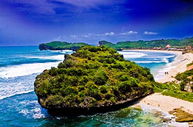

Pantai Krakal

Pantai Krakal yang berlokasi di Desa Ngestirejo, Kec. Tanjungsari, Kab. Gunungkidul, Daerah Istimewa Yogyakarta menyimpan sejuta keramahan bagi pengunjungnya. Deburan ombak yang indah dan pasir putih yang membentang luas membuat pantai ini menjadi salah satu destinasi pantai favorit yang paling ramai dikunjungi wisatawan. Perjalanan menuju Lokasi Kawasan Wisata Pantai Krakal ini, pengunjung akan disuguhkan pemandangan alam yang cukup mempesona yakni bukit-bukit kapur yang diselingi dengan teras-teras batu karang. Hal tersebut merupakan ciri dari daerah karts yang dikelola penduduk.
Anda bisa berjalan di tepian pantai ini, tetapi sangat disarankan bagi anda untuk menggunakan alas kaki, karena batuan di pantai ini sangat tajam. Bagi anda yang hobi surfing, pantai krakal memliki ombak yang cocok dijadikan untuk tempat untuk menguji adrenalin anda, selain itu bagi anda yang hobi memancing disini juga terdapat spot - spot yang dapat dijadikan tempat untuk memancing ikan, Ada satu hal yang unik di Kawasan Pantai Krakal Jogja ini, yaitu munculnya beragam ikan hias di waku tertentu. Ketika situasi laut sedang surut, munculah ikan hias seperti Kepe, Bustum dan Pogat yang mempunyai ukuran besar serta ikan hias Tliger yang kecil. Munculnya ikan hias biasanya bersamaan dengan munculnya lumut saat musim kemarau datang. Ikan-ikan ini juga lebih banyak bermunculan saat awal bulan dibanding akhir bulan.
Jika anda ingin menuju ke lokasi ini, dari kota jogja anda harus naik bus jurusan arah wonosari dari terminal ngiwangan. Sesampainya di terminal wonosari, kemudian anda harus naik angkot ke arah tepus, dari tepus untuk menuju pantai tersebut anda harus naik ojek.
ABg Trans menawarkan kemudahan bagi anda yang ingin menuju ke pantai krakal, dengan layanan FREE DELIVERY anda akan lebih mudah dan lebih cepat untuk sampai ke lokasi ini, dengan harga mulai dari Rp. 60.000,00 anda bisa puas berlibur di Jogja. Jangan ragu untuk bertanya dan menggunakan jasa kami, karena kami mengutamakan kepuasan, keamanan dan kenyamanan pelanggan.
Jalan - Jalan ke Jogja, ABg Trans Aja !!!
Hubungi :
Telp. : 0856-4162-6783 | 0812-2661-2355
WA : 0877-3825-1191 | 0858-7624-4840
BBM : 553db3e7 | D0DE903F
IG : @abg_trans
Line : sewamotordijogja
FB : Rental Motor Jogja AB'Gtrans